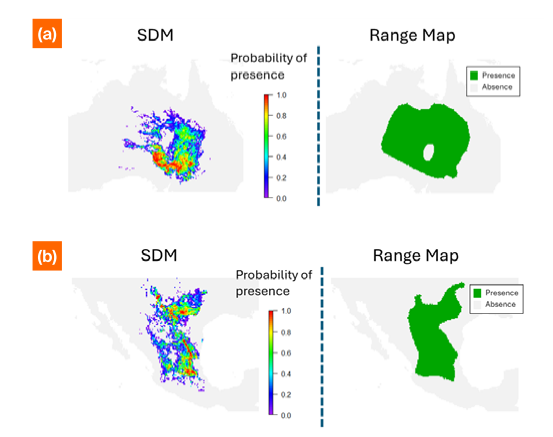
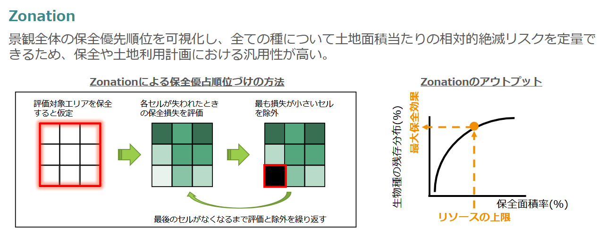

方法論的イノベーション - 種分布モデリングと保全優先度付け
シンク・ネイチャーのイノベーション①
方法論的イノベーション
ビジネスの意思決定に十分な感度を持つ生物多様性指標を構築する上で欠かせないのが、その基盤となる生物種分布データの高解像度化と、生物多様性の総体を包括的に考慮できるアルゴリズムです。
以下にそれぞれの実現のためにシンク・ネイチャーが用いている革新的方法論を記載します。
1) 種分布モデリング Species Distribution Models (SDM)
高解像度な生物種の空間分布データを作成するために、種分布モデリングと呼ばれる手法を採用しています。ここで用いられているのは、種の存在が記録されたデータ (在記録 presence record) を、環境変数などと紐づける（モデリングする）ことで、種が分布している確率が高い地点を得るという考え方です [1]。モデリングに用いる環境変数の空間解像度に応じて、細かい粒度で種の分布域および分布確率を描くことができるという特徴があります。この点は、他の多く用いられる手法であるエキスパートレンジマップ（レンジマップ）から得らえる情報が、専門家が描くポリゴンの解像度に依存してしまうことと対照的です（Figure 1）。
近年、電子化され利用可能な生物の分布情報は、オンライン上のデータベースに急速に蓄積されています。代表的な例が、GBIF (Global Biodiversity Information Facility) や OBIS (Ocean Biodiversity Information System) です。我々は、これらのデータソースから利用可能な情報に加え、10年以上の学術研究を通じて電子化してきた学術的な資料（地域の動植物誌や同好会誌等を含む）に基づく種の分布記録を統合したデータセットを作成しました。データセットには、バイオロギングやeDNAを用いたサーベイデータも含まれます。これらの分布記録と、50以上の環境変数を結びつける機械学習モデルを構築することにより、陸と海をグローバルに網羅した、300,000以上の生物種の分布マップを作成しました。
Figure 1: 異なるタイプの種分布データ
種の外側の境界を示す 種の分布範囲の外側の境界を描くレンジマップでは、分布域が過大評価されている。(a) Leggadina forresti 、(b) Peromyscus pectoralis 
機械学習を用いた種の分布モデルのさらなる利点は、種の分布の高い空間解像度を提供することに加え、種の分布の経時的変化を予測できることです。種の分布は、短期的・中期的な土地利用や長期的な気候変動に伴う環境変化に応じて変化します。実際、事業活動による土地の改変は種の分布を制限し、自然再生活動は種の生息地を改善することで種の分布を回復させます。したがって、機械学習による種の分布モデルは、事業活動の影響を時系列にわたってシナリオ分析する際に有用です。
2) Zonation による空間的保全優先付けアルゴリズム Spatial Conservation prioritization (SCP) by Zonation
高解像度の分布データを用いることに加え、 ビジネスと生物多様性の接点を評価するという目的に適った生物多様性指標を実現するためには、希少種だけでなくあらゆる種をカバーした、全球の統一的な評価が必要になります。
これを実現するために、我々は Zonation というアルゴリズムを用いています。この手法はもともと、生物多様性を保全するためのコストを最小化する、あるいは限られた保全資源で保全できる生物多様性の量を最大化するといった最適化問題を解くための手法として開発されました。近年では保全便益最大化問題として一般化され、この問題を解くアルゴリズムがソフトウェア Zonation に実装され、保全の実務で広く利用されています [2,3]。
Figure 2: Zonationによる最適化のフロー

Zonationは、対象地域内のすべての地点について保全優先度ランクを算出します。このランクにより、各地点の「保全価値」を相対評価することができます。このスコアは、対象となる地域に分布する生物種の分布データを入力として利用し、それぞれの絶滅リスク低減という観点から、保全価値が最も「低い」地点を順次除外するという方法で算出されます。この計算の過程では、除外されていないエリアの中で、それぞれの種の分布域のどれだけの割合が補足できているかが計算されます。この値は、ある土地を開発することによって生じる絶滅リスクの増加量と解釈できます。このようにして算出される保全優先度スコアは、生物多様性の重要性を示す強力な指標であり、保全活動の優先地域を特定するだけでなく、特定の場所で開発や保全活動を実施した場合の潜在的なマイナス影響とプラス影響を事前に推定することにも使えます。
我々は、全球で整備した300,000にも及ぶ種の分布データを入力に用いることで、全球の保全優先度ランクマップを作成しました。
まとめ
本稿では、シンク・ネイチャーが提供する、高解像度、高感度、かつ包括的な生物多様性指標の背景にある方法論を概説しました。
Reference
- [1]: Elith, J., & Leathwick, J. R. (2009). Species distribution models: ecological explanation and prediction across space and time. Annual review of ecology, evolution, and systematics, 40(1), 677-697.
- [2]: Moilanen, A et al. (2014) Zonation—Spatial conservation planning methods and software. Version 4. User Manual 290.
- [3]: Moilanen, A., Lehtinen, P., Kohonen, I., Jalkanen, J., Virtanen, E. A., & Kujala, H. (2022) Zonation 5 v1.0rc2 (release candidate 2) software upload. Zenodo. https://doi.org/10.5281/ zenodo.5899003